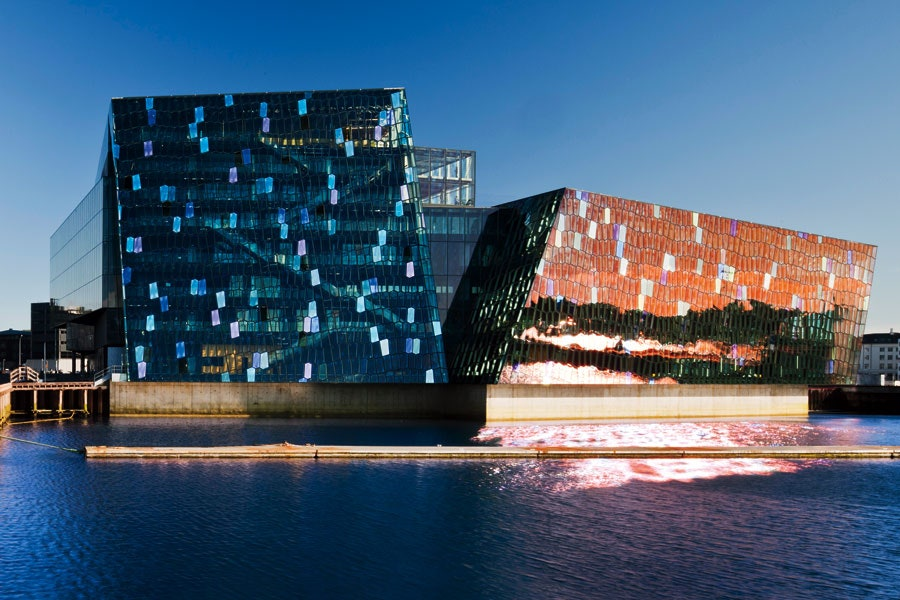
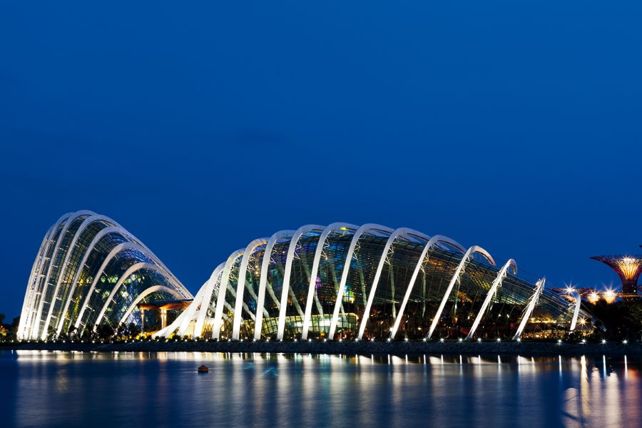
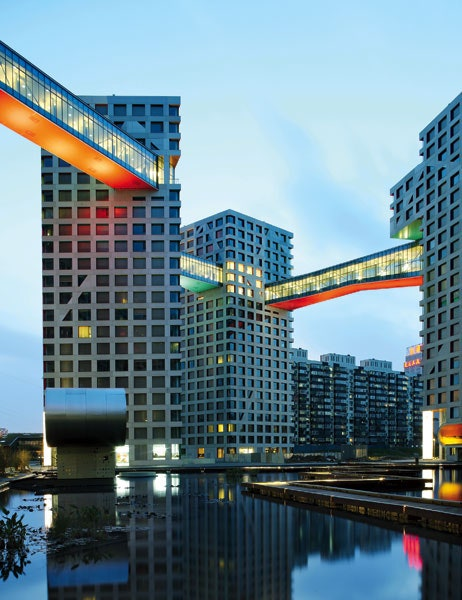

hARPA concert hallHARPA Concert Hall and Conference Center ReykjavÍk, Iceland Henning Larsen Architects and Batteríið Architects 2011.Even before its official opening, this gemlike venue breathed new life into the Icelandic capital’s once-sleepy harbor, captivating locals and luring visitors with its kaleidoscopic façade of multicolor glass. The crystalline shell, conceived by artist Olafur Eliasson, wonderfully complements the structure’s aggregate of jagged, geometric volumes. At night, exterior LED strips activate, transforming the waterfront landmark into a shimmering beacon of beauty.

Gardens by the Bay,SingaporeWilkinson Eyre Architects, Grant Associates 2012. Side-by-side parabolic conservatories of glass and steel anchor this cutting-edge botanical garden in Singapore’s booming Marina Bay district. Named the 2012 building of the year by the World Architecture Festival, the Wilkinson Eyre–designed structures replicate distinct climates—one dry, the other humid—allowing for diverse attractions like a flower meadow and a misty mountain forest.

linked hybrid ,BeijingSteven Holl Architects 2009.Composed of eight connected towers, this mixed-use complex represents a compelling vision for 21st-century urban development. To combat the isolation often associated with luxury residential buildings and gated communities, the architects placed wide, open passages at ground level, ushering pedestrians into a series of public spaces that include gardens, shops, restaurants, and schools.